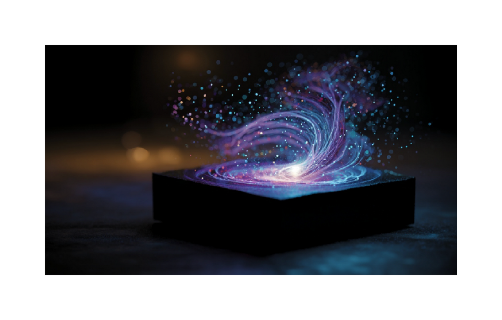
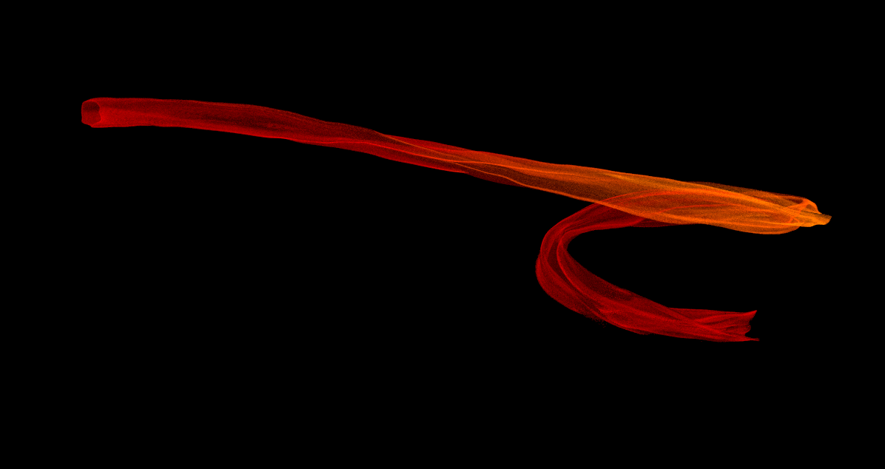

Week5
Team Member
Yiqi Zheng (Fx)
Riley Ho (Fx)
Itim Kongsakulvatanasook (Fx)
Sofia Mancias (Compositing)
Feb 8
Benji Hopkins (Look Dev)
SCAD X HARBOR X ETC - Week 5
Hello, this is my fifth week of the Scad x Harbor x ETC blog!
These are the mentors' feedback from Tuesday's presentation.
Kyle:
-
You can cut out in between so the shots aren’t too long, but make sure the camera movement makes sense
-
Don’t see a connection of the particles and the printed piece for shot 3
-
How could we make the particles feel more liquidly and not solid
-
Particles as a light source will make them feel more part of the scene
-
Shot 4 is the hero shot
Beck：
-
No correlation to the particles and the side view of paint
-
Be aware of substeps and banding for Shot 2
-
Need motion blur, the particles are very defined- distinct 3 dots
-
Particles are too big, and you need more particles
-
Less particles around the center
-
Layer particles and smoke and trails
-
Does not have to be only one sim
-
Layer sims to add complexity
-
Shot 3- Hitting a collider, and not the wood itself, feels like an accident than a creative choice
-
Particles should not stop til they reach painting
-
Pscale variation in particles, older particles start to die
-
You can do so many cool things with particles- do them
-
Maybe go more macro on shot 3
-
Right now particles look like glitter because there is so specular
-
Chalky pigment look is what you need
-
Focus on the one effect
Molly:
-
The speed of the particles is causing us to lose the transition between the particles forming the painting rather than them blasting out
Stephen:
-
Like the layout of last shot
Hailey:
-
Combine shot 3 and 4
Billy:


To-Do List:
-
Refine the particles’ path and flow shape (Create noise)
-
Add more volume and tin the particles
-
Create more color variants for particles
For this week, my main goal is to make the particles look more fluid and to add some variants to the flow's edges. This is the first version of my particle flows. I tried to add more noise to achieve this, but the result was not satisfactory—they looked too messy. In the second shot, I adjusted the thickness of the final flow and modified the settings for the wind and PopcurveForce, and now it looks more fluid-like.
I also tried to make the emitter become varied, so the particles would have more variation. Because I didn't get a better result, I started to try another method I mentioned before, using pathdeform. The result for a single flow looks better than what I had, but when there are six flows, it looks too noisy. I really need to balance creating variations for the edges while avoiding excessive noise.



I like this feeling, but unfortunately, the flow movement is not that smooth, and I also have less control over the path.

When I tried to put more flows here, it started to become messy and noisy. But this way is suitable for the close-up shot and only has a few flows, because you only need to simulate once and apply it to any types of curves, so it's very convenient and useful.
-
Refine the path (add variants for the particles)
-
Improve the material of the particles